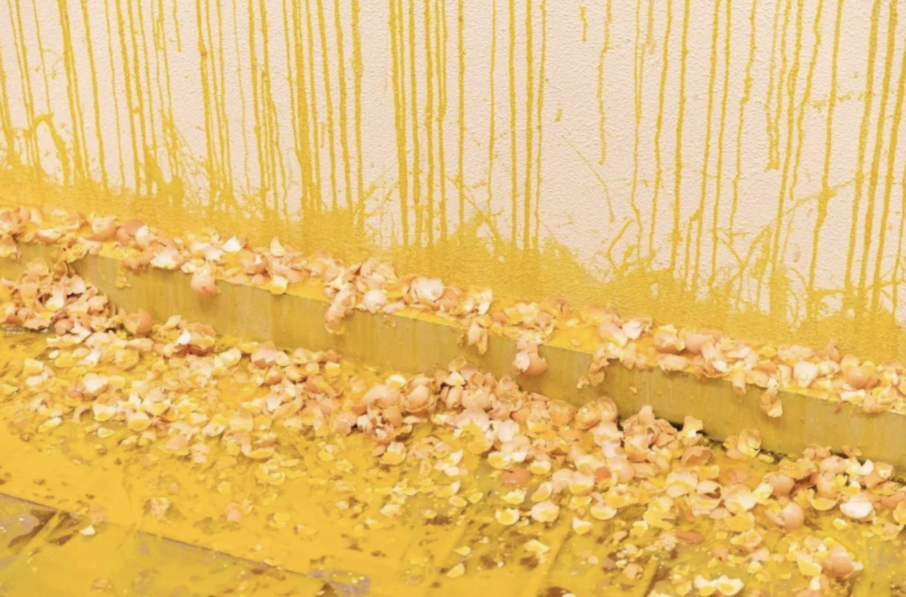
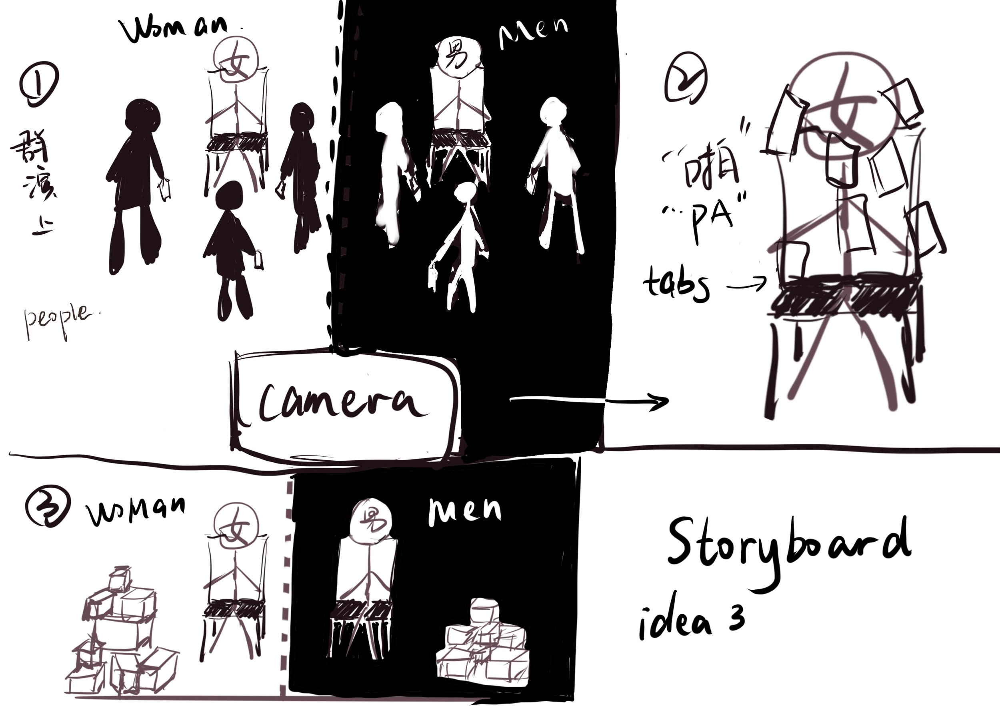
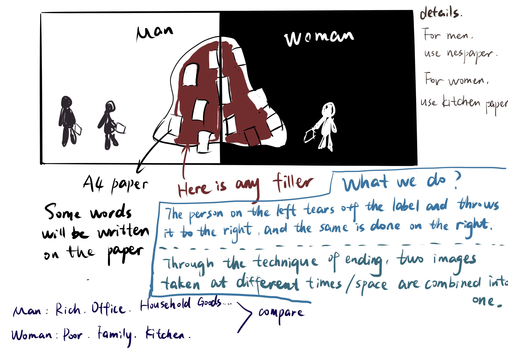

Research topic:
The 22 richest men in the world have more wealth than all the women in Africa. (Oxfam report published 20 January 2020)
Background
Oxfam compared the Forbes 2019 billionaire list to the total wealth of all African women aged 20 and over, including all women, not just the poorest 50% (Hodal, 2020). The purpose of this report is to show that 'inequality continues to be at crisis levels with wealth valued over work and the contribution of women under-rewarded" (Bowden, 2020). Women and girls are responsible for taking care of the household such as cleaning, cooking, caring for the elderly and children, but they are not paid accordingly and cannot even speak up for themselves (Sriskandarajah, 2020). Danny Sriskandarajah, Chief Executive of Oxfam GB, commented on this in 2020: "When 22 men have more wealth than all the women in Africa combined, it's clear that our economy is just plain sexist." However, in the wider context, the roles, responsibilities and decision-making functions of men and women are often influenced by socio-economic factors, socio-cultural attitudes and group and class obligations (Bagnol, 2012). And research has shown that in most countries (whether low or high income), men and women do not have equal access to the same natural, human and capital resources (Black, Guest, Bagnol, Yngve and Laven. 2019).
Reflections on the topic
Why not compare it to other continents?
There are only seven continents on the globe, of which Africa is the one with the lowest level of economic development in the world and the one with the most problems (chronic ethnic conflicts, geographical barriers, environmental damage from industrialization, European colonization in Africa, corrupt regimes after independence, poor education, self-discipline of the people, etc.) (Wikipedia, 2021). Although gender inequality and economic inequality are widespread worldwide (Wikipedia, 2021), to highlight the severity and urgency of the unequal distribution of wealth between the sexes, Africa, the world's second most populous and least economically developed continent, is the most representative one.
On the unfolding of the performance project
After our first meeting, the three of us coincidentally found what interested each of us. I looked up some literature and also referred to my previous theoretical knowledge base, Shiyu Deng found some images of African women and Ruoxi Qiu researched about some famous artists. We had very good group collaboration and it was nice to work with our teammates. For the second meeting, we focused on the theme of "wealth distribution and gender". After discussion, we reached an agreement on a performance format that we like, which is similar to Marina Abramović's 1974 performance Rhythm 0 (see Figure 1) or Sarah Lucas's 2018 performance One Thousand Eggs: For Women (see Figure 2).

Figure 1 Marina Abramović. Rhythm 0. 1974

Figure 2 Sarah Lucas. One Thousand Eggs: For Women.2018
First of all, we want this to be a work with great randomness. The key characters of the play are not actors/actresses from a traditional sense, but the audience themselves will be the main focus. The progress of the play will be filled with unknowns. All our movements will be recorded by the camera and that will be part of our work. We want it to be symbolic and ironic, to make the audience of the play think outside the box to understand the meaning of the work. We want to convey the idea that men and women are equal, and they should enjoy the same social status no matter in the family or other places, and that no one should discriminate any people because of their gender. We think that men should also do housework at home and take care of the family, and that these jobs need to be paid equally and treated fairly.

Figure 3 Idea Storyboard
Secondly, we have made a rough format: Option 1: the space is filled with a humanoid object that we have made, and it is covered with different labels, tags or other things, and all we have to do is tear off the labels or remove the things.; Option 2: the humanoid object remains the same, we put labels on it and then finally tear them off; Option 3: the audience puts on the labels that they have an impression of, and we swap or take them away (see figure 3). We think it would be a more objective performance if we can invite a larger group of audience to participate... We initially wanted to wait for Shiyu Deng to arrive in London to complete the piece together, and even thought of the fun part of the piece (we could use the lighting in room 23 to create a completely dark environment and leave light on the humanoid object) and invite more people to come and complete the piece... but the London lockdown broke our initial expectations. We had to edit and shoot at home with a white wall backdrop to bring the two images together (Figure 4).

Figure 4 Idea storyboard
Reflection
1. We thought a lot about what we wanted to express but didn't know how to describe it better. We spent a long time discussing the presentation of this work. We should learn more from others about how to visualize our ideas better in the future.
2. There are too many restrictions at the moment due to the London lockdown, which prevented us from meeting offline to discuss it and that it’s truly a great pity since some of the actions or movements can’t be delivered quite well through video chat.
3. We think it’s a great attempt to design such a special performance, but if we can have more chance to try other formats and compare the results of different styles, we might end up of getting a more interesting performance.
（963 words）
Reference
1. Africa (2021). Available at: https://en.wikipedia.org/wiki/Africa (Accessed: 5 January 2021).
2. Black, K., Guest, D., Bagnol, B., Braaten, Y., & Laven, A. (2019). Gender, health and smallholder farming. In Walton M. (Ed.), One Planet, One Health (pp. 105-126). AUSTRALIA: Sydney University Press. doi:10.2307/j.ctvggx2kn.11
3. Danny Sriskandarajah (2020). Available at: https://danny.oxfam.org.uk/2020/01/20/why-our-economy-is-just-plain-sexist/ (Accessed: 5 January 2021).
4. Global economy 'just plain sexist' - Oxfam (2020). Available at: https://theecologist.org/2020/jan/20/global-economy-just-plain-sexist-oxfam (Accessed: 5 January 2021).
5. Valentina A. Paredes & M. Daniele Paserman & Francisco Pino, 2020. "Does Economics Make You Sexist?,"NBER Working Papers 27070, National Bureau of Economic Research, Inc.
6. Weatherby, B. (2020) World's 22 richest men 'wealthier than all the women in Africa', Standard.co.uk. Available at: https://www.standard.co.uk/news/world/oxfam-report-22-richest-men-have-more-money-than-all-women-in-africa-a4339231.html (Accessed: 5 January 2021).